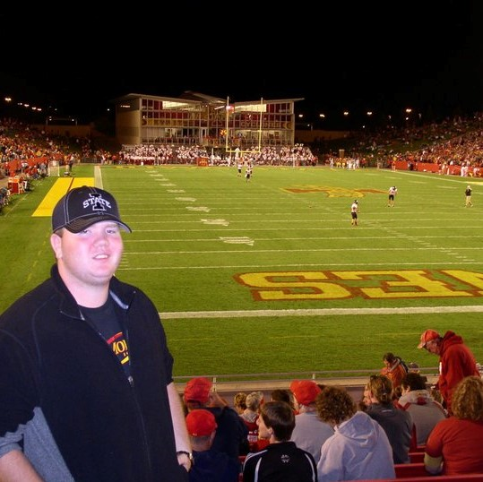
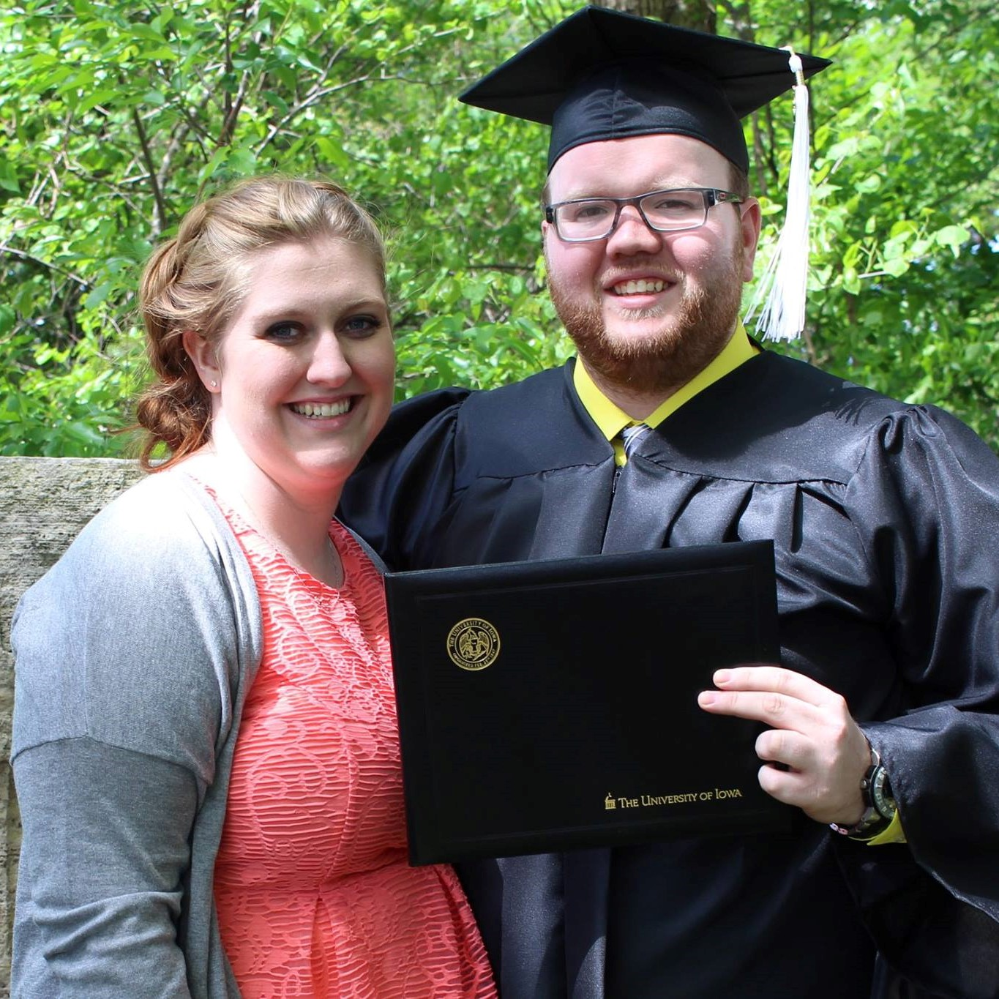
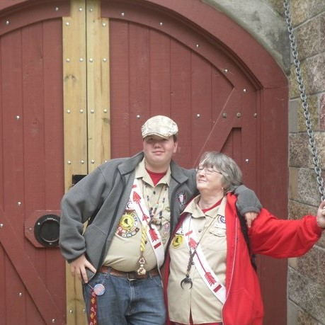
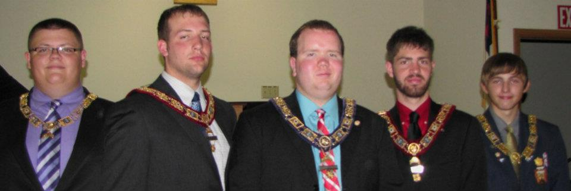

This is the part of the website where I attempt to humanize myself beyond just a CV and listing of my projects. I am a real person and I do real things that I really enjoy! My life has had ups, downs, left, and right turns. All of those have made me who I am today and I cannot think of a thing I would have done differently because I have no idea how that would have changed me!
Librarians and other people who work in libraries are all interesting people with a dizzying number of interests, hobbies, and experiences. But what I have noticed about them is that the majority took winding roads to become a librarian. Few said, "I wanted to be a librarian when I graduated high school." My path to where I am today is also a nonlinear path with changing goals, life experiences, and interests which makes me who I am today. These topics can be explored below.
For my winding road through education I need to start out as a freshman in high school. I took a class called Introduction to Engineering Design. One of the first homework assignments was to research 10 or so different fields of engineering and describe them. From that assignment, I learned about Aerospace Engineering and it sounded awesome! After that the plan for all of high school was Aerospace Engineering.
My first choice of college was the United States Naval Academy and Iowa State University was my second choice. I received two nominations for admission to the Naval Academy, one from Senator Grassley and one from former Senator Harkin. But, with an acceptance rate of 9% I was not admitted. Thankfully, the State of Iowa uses a formula to determine admission and if a student's score is high enough they are automatically accepted. Mine was and following high school I began as an Aerospace Engineering Student at Iowa State University.
While at Iowa State I greatly enjoyed my freshman year. The program talked about high level concepts of Aerospace Engineering, we did cool projects, and basic computer programming with Fortran and MATLAB. When my sophomore year started the class began to be taught what Aerospace Engineering was and how that process gets done. It quickly became apparent that engineering was not for me. I decided to withdraw from Iowa State.
At this point in my education I had no idea what to do, as for the last 5+ years of my life the plan had been Aerospace Engineering. That summer I asked myself what did I enjoy and thinking over my high school education I decided I had enjoyed History. The next thought I had was "So, I get a history degree then what...What is my plan with that?" and I decided on a librarian. My thought was I liked helping people learn but I didn't want to grade homework so a librarian made sense to me.
After a semester at Kirkwood Community College I transferred the credits I had earned there and my credits from Iowa State to the University of Iowa, they had the graduate program that I wanted to get into so it made sense to go there for my undergraduate degree. I then began to work towards my degree in History.
There is not an undergraduate library science program or classes the University of Iowa but there is a Museum Studies Certificate. To me, a museum curator and a librarian require similar skills, making this certificate a logical choice. With that program, I decided to focus on collection care and management and non-profit organization management.
By my 5th year of college I had finished most of my History Degree and most of my Museum Studies Certificate. I did not, however, have enough credits left to be a full-time student. I remembered that I had enjoyed computer programming at Iowa State so I decided to add some basic computer classes to get me to 12 s.h. each semester. While exploring this, I realized I only needed three more classes to have an Informatics Minor. That is how in my 5th year of undergraduate study I added and completed a minor.
I was pleased to graduate with the Class of 2016 with my B.A. with a History Major, Informatics Minor, and Museum Studies Certificate.
I had been accepted to the University of Iowa School of Library and Information Science Class of 2018. Since beginning graduate school, I have continued to focus on technology and have grown interested in academic librarianship. I spent a semester with the Systems Librarian as my mentor and have taken classes to expand my understanding of technology. Going into this second year of the program I hope to expand into more technology and to learn the ethics that accompany technology and the vast collection of data that a library keeps about users.
These organizations are listed in chronological order of when I joined them.
Scouting
My Scouting career followed the prescribed route. I started as a Tiger Cub in 1st Grade and went until I turned 18 as a youth then spent some time as a Scout Leader. Along the way I had earned the Arrow of Light, the highest award for Cub Scouts, and the rank of Eagle Scout, the highest award for Boy Scouts. I was selected for the Order of the Arrow and was designated to receive the Vigil Honor, the highest honor that one can receive in the Order of the Arrow. In terms of honors and awards I was successful. But, what the Scouting Program gave me was a foundation in leadership, planning, and great friends and memories. That was the true value of Scouting to me.
DeMolay
The organization that has by far done the most to shape me is the Order of DeMolay. I joined in 2007 and the opportunities it has given me are second to none. DeMolay provides a guide to become an upstanding member of society, the freedom to experiment with ideas, word hard, fail, succeed, and make memories and friends from around the globe.
I am proud to say that it did all of that for me. I went from a new member to the State Master Councilor for Iowa DeMolay, the leader of the State of Iowa. The team that I was on planned events for the state and I had the ability to travel to other states to visit their events.
Now as an adult with the organization I work with the State Officer Corps, the team of young men who form the leadership of the program, and I also volunteer my time to maintain the Iowa DeMolay website. Dedicating my time is the smallest of things I can do if I can help another young person derive the same benefits I had from the organization
Freemasonry
Freemasonry has been a continuation of the principles and guide that DeMolay started. I joined Fidelitas Lodge in Fairfax, Iowa in 2011. Since that time, I have been continuing to meet new people, build the relationships that DeMolay started, and enjoying the journey that Freemasonry is.
Travel
I want to travel and see the world! On a graduate student's budget, it is difficult to do. My favorite trip to date was to Washington D.C. since it is steeped in history. I accidently ended up focusing my History Major around the cultures of the North Sea and Mediterranean Societies. Because of this, the places I most want to see are England, Germany, Ireland, Italy, Greece, Denmark, and Egypt.
Photography
I approach my photography the same way I approach librarianship. I am always trying to learn something new and get better at it. There are so many different techniques and methods. Plus, there are so many tools to learn! From photo editing software to camera settings to lenses and filters. So much to learn!
The work I am proudest of can be found on Flickr.
Maps and Globes
One of my favorite things to look at are maps and globes. To me, they are equal parts art, tool, and history. They show how the cartographer views the word with an artistic flair. A map is a tool that has been used for centuries to find ones way around. And finally, maps and globes show the history of the world. How countries have been shaped, formed, eliminated, renamed, or otherwise have changed. I plan to own a nice globe one day and have it in my office.